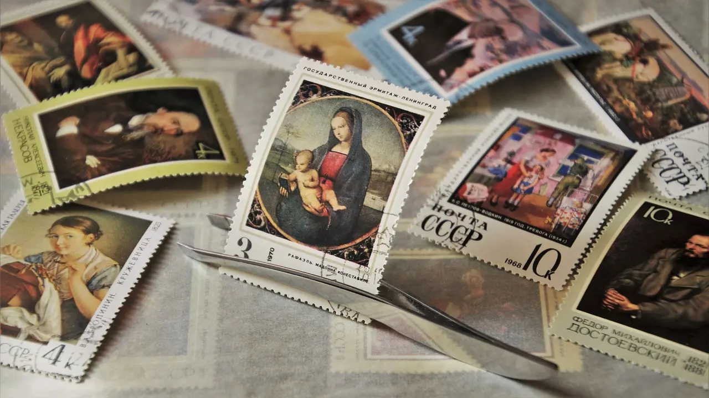
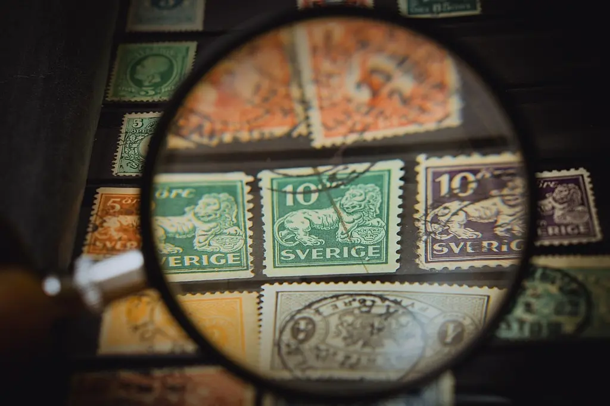

Material
För att förvara alla dina frimärken behöver du först och främst ett album. Det finns några olika frimärksalbumtyper att välja på.
Insticksalbum är bundna frimärksalbum med fickor på varje sida där du kan sätta in dina frimärken. Det är det klassika frimärksalbumet och kostar inte särskilt mycket.
Nackdelarna är att fickorna inte är särskilt höga och skyddar då inte hela ditt frimärke, du bör därför vara extra försiktig när du bläddrar.
Sidorna sitter också fast och går inte att flytta, om du vill byta plats på en sida med frimärken måste du ta ut alla frimärken och sätta in dem på den sidan du vill ha dem på.
I jämförelse är det mycket lättare att sortera om frimärkena i Visiralbum där du kan flytta på bladen.
Bladen är oftast svarta eller vita och märkerna placeras i genomskinliga fickor som finns på varje sida. Det finns olika typer av sidor, vissa sidor med endast en ficka och vissa med åtta fickor.
I större fickor kan du lägga bykort, förstadagsbrev och i mindre fickor, frimärken. Det är perfekt anpassat till alla möjliga typer av frimärken och helheter och fickorna är stora vilket hindrar sakerna från att falla ur.
Nackdelen med Visiralbum är att de ofta är dyra, vill du ha fler sidor behöver du köpa, ett blad brukar kosta runt 7 kr/styck.
När man sätter in frimärkerna i album, tvättar frimärkerna eller flyttar omkring dem är det bättre att använda pincett än händerna. Annars kan drimärkerna kan lätt vikas, skadas och smutsas ner. Det finns en hel del olika pincetter och man får helt enkelt testa sig fram vilken man tycker om bäst.
Om du vill studera dina frimärken extra noggrant och se små detaljer kan du använda ett förstoringsglas eller lupp.
